Paper Prototype
With our two main goals in mind, 1. Checking in with your partner and 2. Telling your partner you need some time off, we first started implementing our design through paper prototyping. This is a fast and easy way for us to get feedback and improve upon our design early in the process.
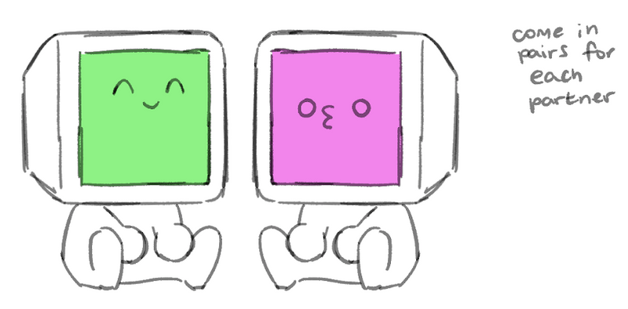
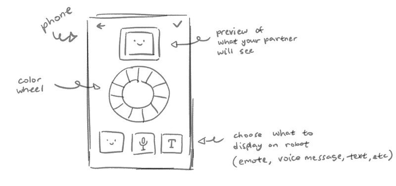
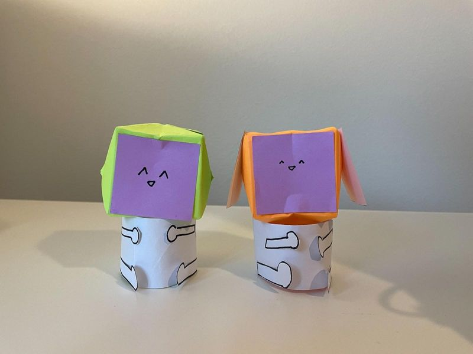
 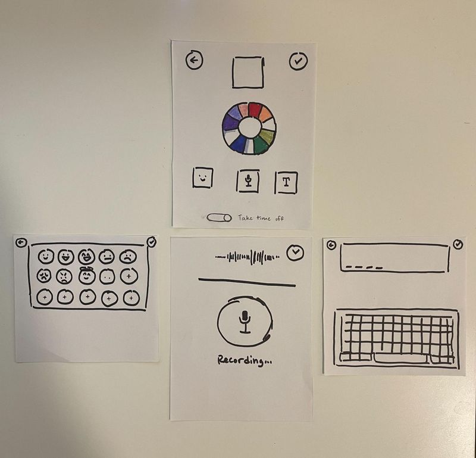
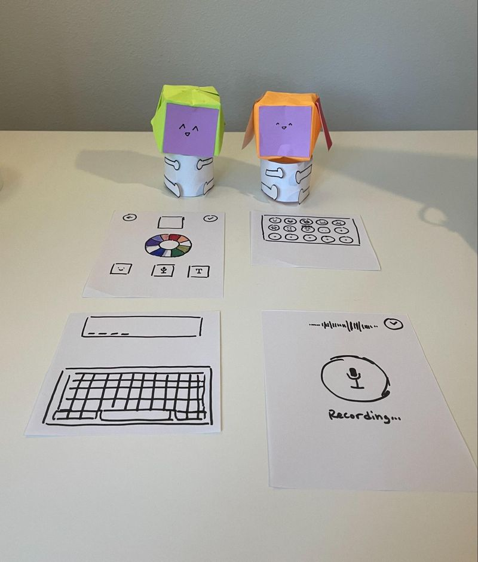
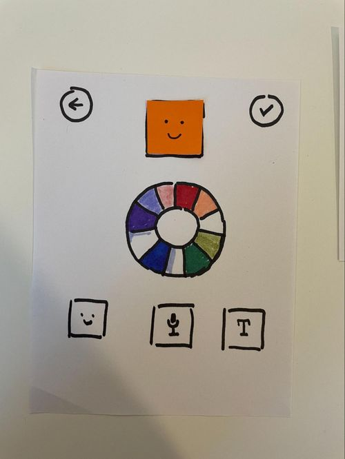
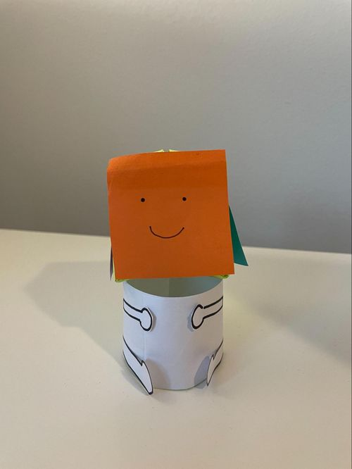
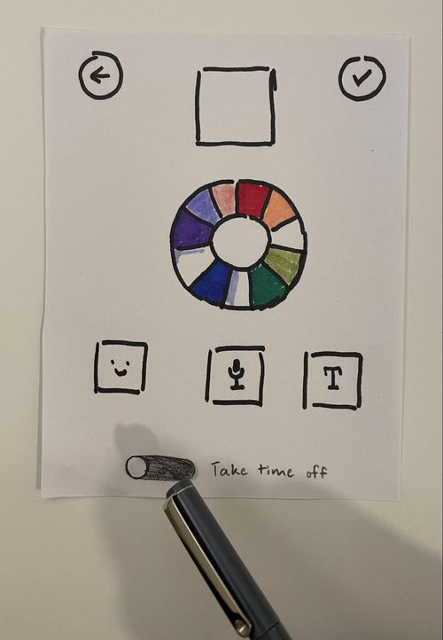
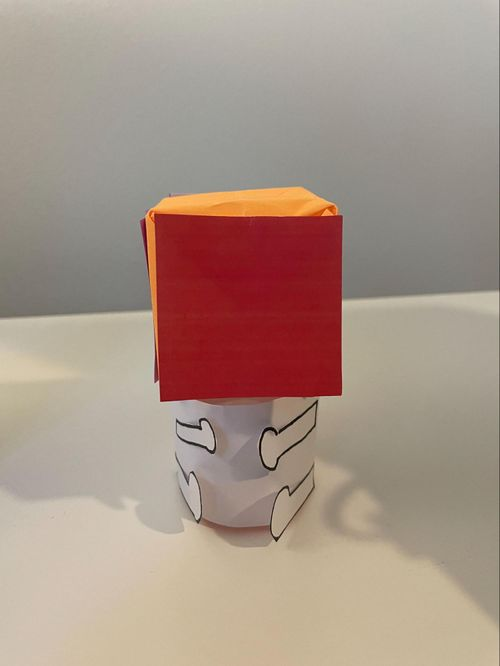
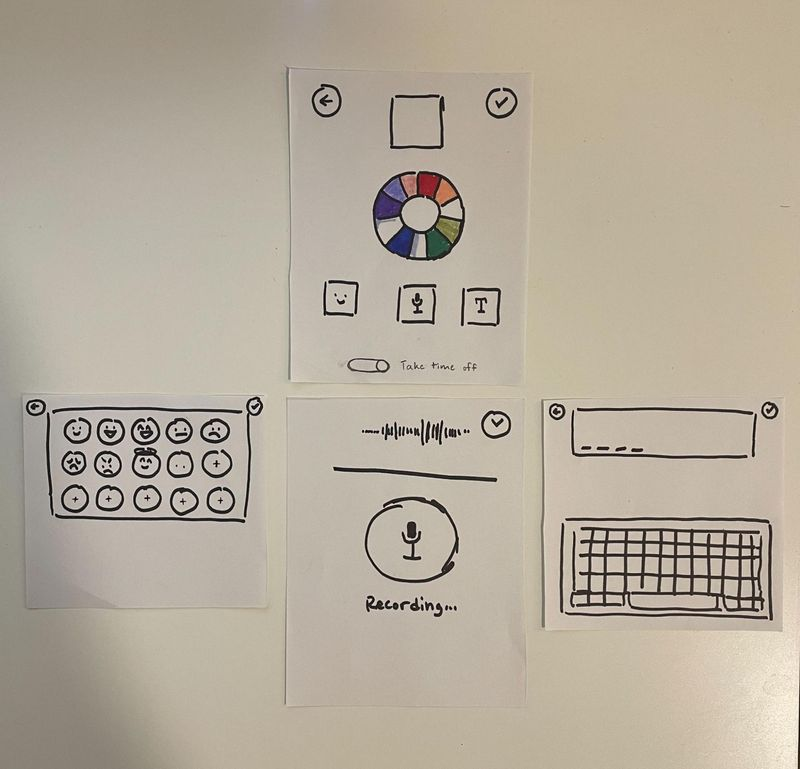
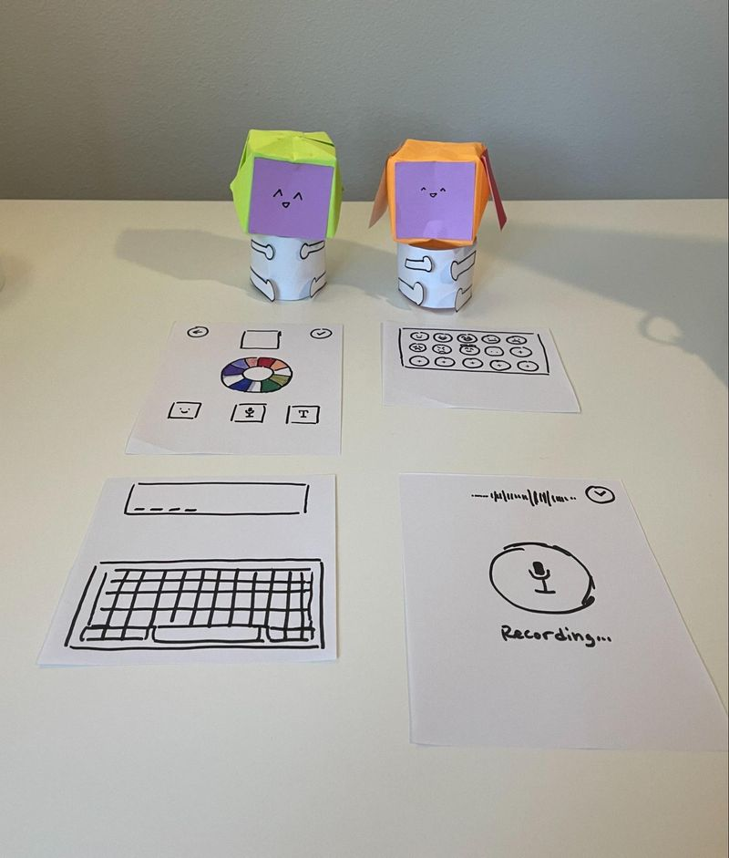
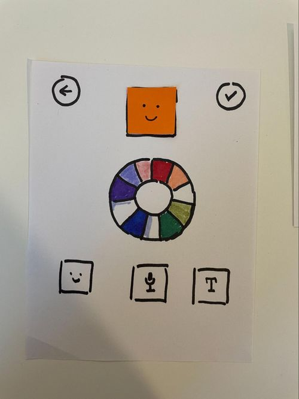
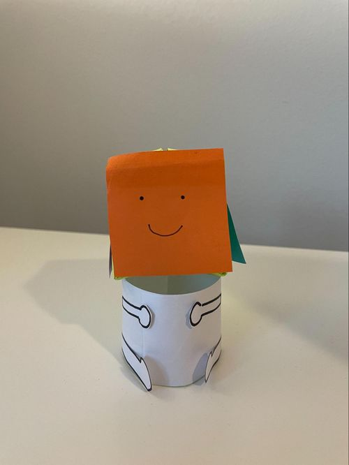
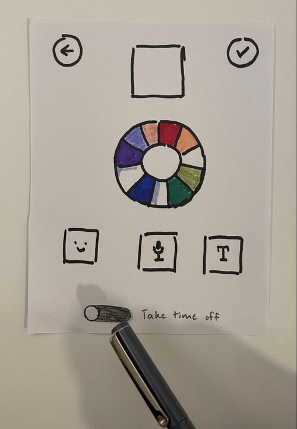
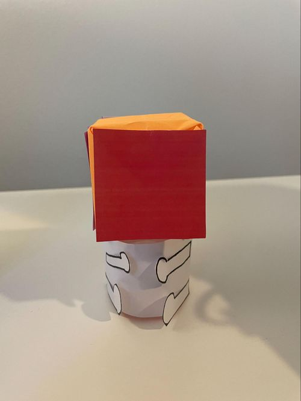
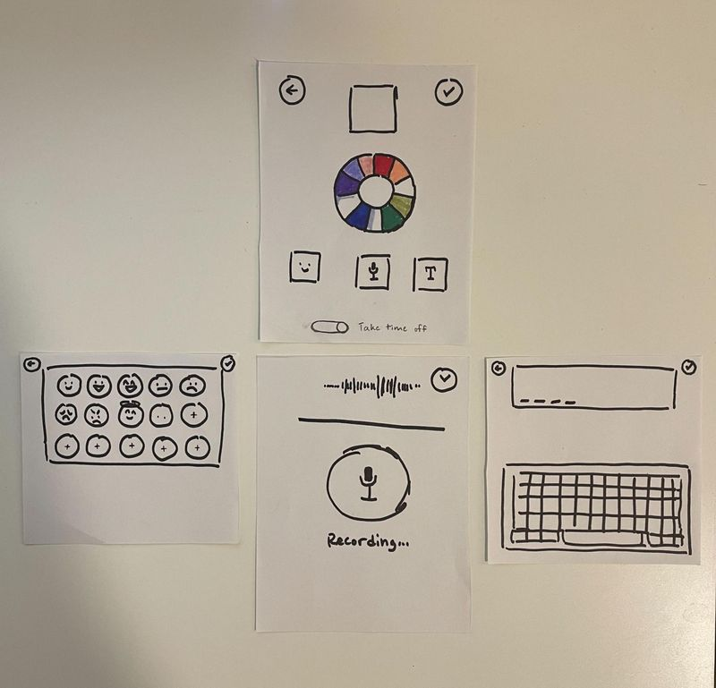
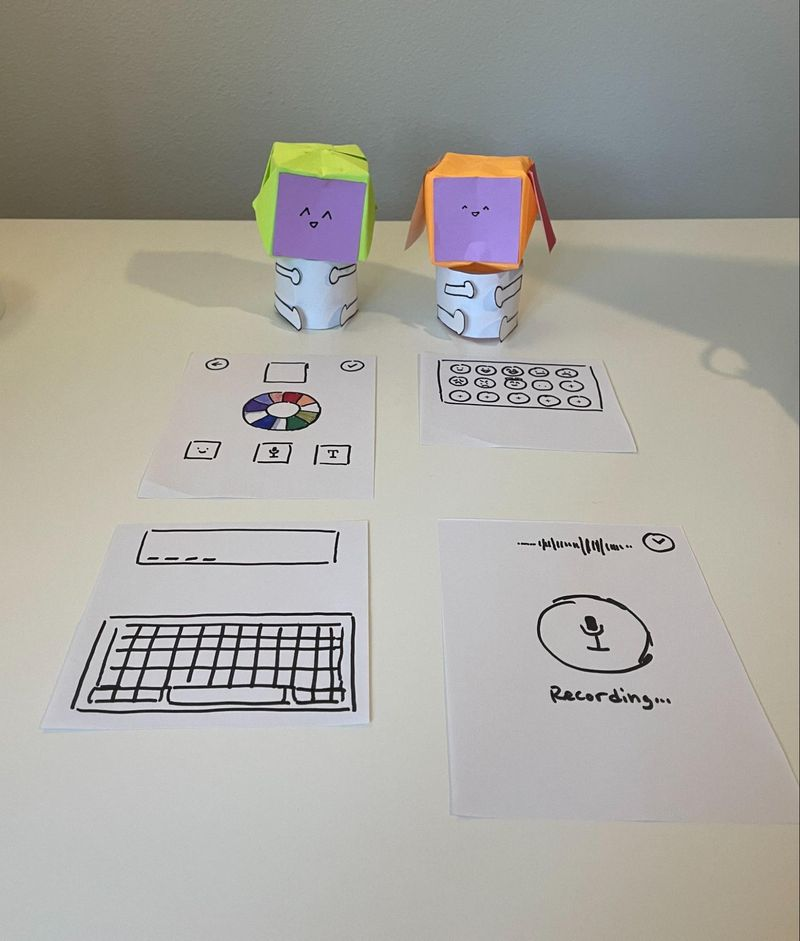
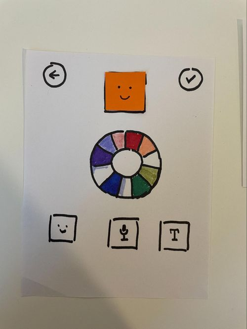
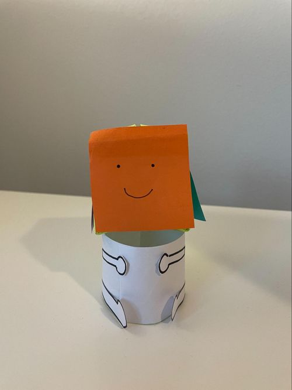
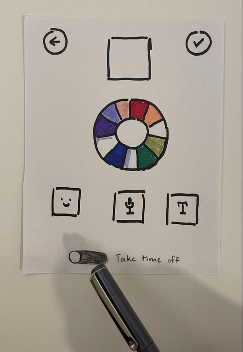
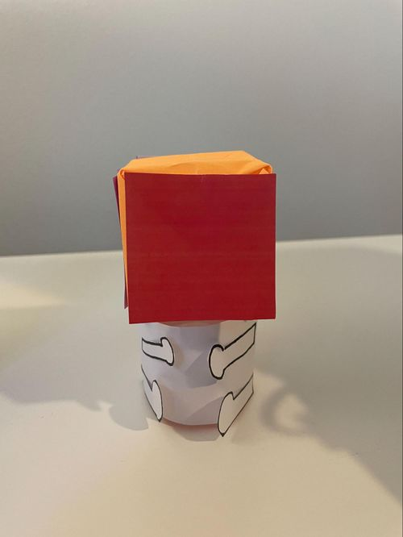